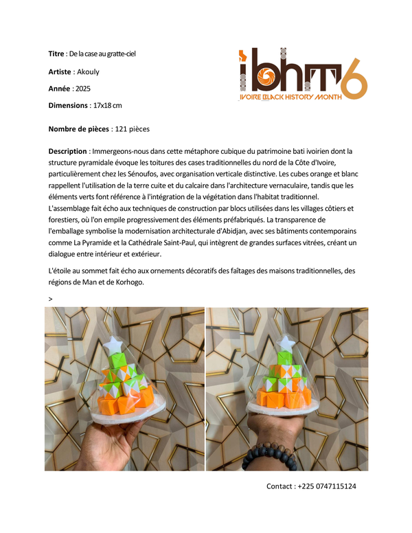
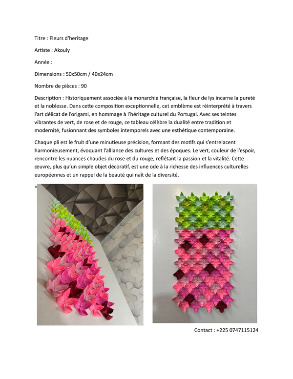
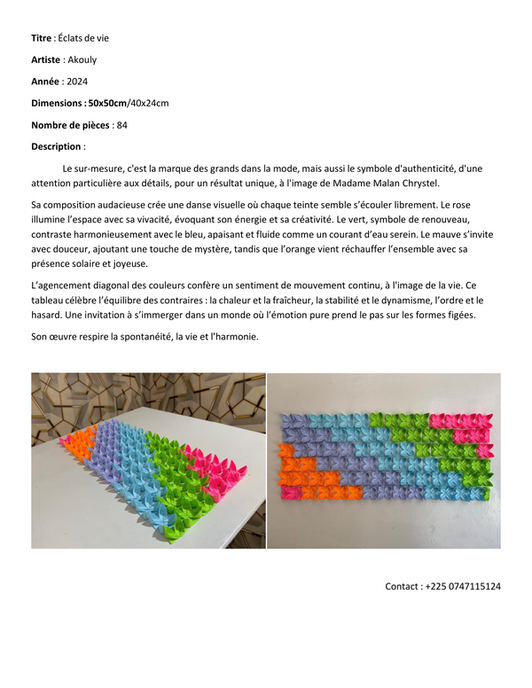
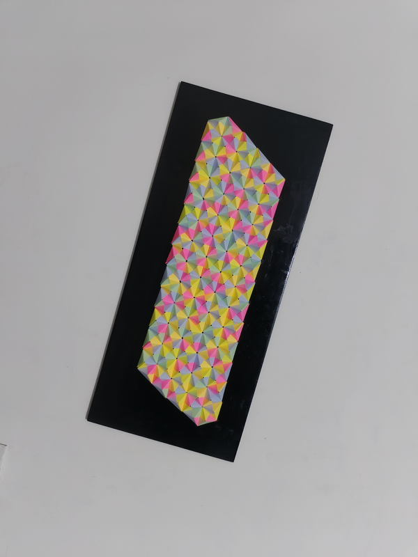

De la case au gratte-ciel
Ouvrage et document retraçant une évolution architecturale et conceptuelle, alliant précision géométrique et mise en page soignée.

Fleurs de lys — Portugal
Création et pliages autour du motif floral de la fleur de lys, inspirés d'influences culturelles et de géométries artistiques portugaises.

Éclats de vie — Mme Malan
Recueil artistique et hommage personnalisé célébrant un parcours avec sensibilité, rigueur de pliage et finesse graphique.

Embellissement d'Intérieur
Création artistique et décorative réalisée pour embellir mon intérieur. Présentée en document PDF multipages haute définition.